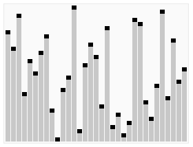
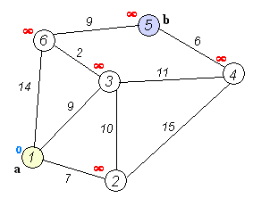

Algoritmo 1: Algoritmo de ordenación rápida
La ordenación rápida es un algoritmo de ordenación desarrollado por Tony Hoare. En promedio, ordenar n elementos requiere Ο(n log n) comparaciones. En el peor caso requiere Ο(n²) comparaciones, pero esta situación no es común. De hecho, la ordenación rápida suele ser significativamente más rápida que otros algoritmos Ο(n log n), porque su bucle interno (inner loop) puede implementarse de manera muy eficiente en la mayoría de las arquitecturas.
La ordenación rápida utiliza la estrategia de divide y vencerás (Divide and conquer) para dividir una lista en dos sublistas.
Pasos del algoritmo:
1. Seleccionar un elemento de la secuencia, llamado "pivote" (pivot).
2. Reordenar la secuencia: todos los elementos menores que el pivote se colocan antes del pivote, y todos los elementos mayores que el pivote se colocan después (los números iguales pueden ir a cualquiera de los lados). Después de esta partición, el pivote queda en la posición media de la secuencia. Esto se llama operación de partición (partition).
3. Ordenar recursivamente (recursive) la subsecuencia de elementos menores que el pivote y la subsecuencia de elementos mayores que el pivote.
El caso base de la recursión es cuando el tamaño de la secuencia es cero o uno, es decir, ya está ordenada. Aunque se recurra continuamente, el algoritmo siempre termina, porque en cada iteración coloca al menos un elemento en su posición final.

Algoritmo 2: Algoritmo de ordenación por montículos
La ordenación por montículos (Heapsort) es un algoritmo de ordenación diseñado utilizando la estructura de datos montículo. Un montículo es una estructura aproximadamente de árbol binario completo y satisface la propiedad de montículo: el valor clave o índice de los nodos hijos es siempre menor (o mayor) que el de su nodo padre.
La complejidad temporal promedio de la ordenación por montículos es Ο(n log n).
Pasos del algoritmo:
Crear un montículo H[0..n-1]
Intercambiar la cima del montículo (el valor máximo) con el último elemento
3. Reducir el tamaño del montículo en 1 y llamar a shift_down(0), con el objetivo de ajustar el nuevo elemento en la cima del arreglo a la posición correspondiente.
4. Repetir el paso 2 hasta que el tamaño del montículo sea 1.

Algoritmo 3: Ordenación por mezcla
La ordenación por mezcla (Merge sort, traducido en Taiwán como: ordenación por combinación) es un algoritmo de ordenación eficiente basado en la operación de mezcla. Este algoritmo es una aplicación muy típica de la estrategia de divide y vencerás (Divide and Conquer).
Pasos del algoritmo:
1. Solicitar espacio, cuyo tamaño sea la suma de las dos secuencias ya ordenadas, para almacenar la secuencia combinada.
2. Establecer dos punteros, cuyas posiciones iniciales sean el inicio de las dos secuencias ya ordenadas.
3. Comparar los elementos apuntados por los dos punteros, seleccionar el elemento más pequeño y colocarlo en el espacio de mezcla, y mover el puntero a la siguiente posición.
4. Repetir el paso 3 hasta que algún puntero llegue al final de la secuencia.
5. Copiar directamente todos los elementos restantes de la otra secuencia al final de la secuencia combinada.

Algoritmo 4: Algoritmo de búsqueda binaria
El algoritmo de búsqueda binaria es un algoritmo de búsqueda para encontrar un elemento específico en un arreglo ordenado. El proceso de búsqueda comienza con el elemento central del arreglo; si el elemento central es exactamente el elemento buscado, el proceso de búsqueda termina; si un elemento específico es mayor o menor que el elemento central, se busca en la mitad del arreglo que es mayor o menor que el elemento central, y se compara desde el elemento central como al principio. Si en algún paso el arreglo está vacío, significa que no se encontró. Este algoritmo de búsqueda reduce el rango de búsqueda a la mitad en cada comparación. La búsqueda binaria reduce el área de búsqueda a la mitad cada vez, y su complejidad temporal es Ο(log n).
Algoritmo 5: BFPRT (algoritmo de búsqueda lineal)
El problema que resuelve el algoritmo BFPRT es muy clásico: seleccionar el k-ésimo elemento más grande (o el k-ésimo más pequeño) de una secuencia de n elementos. Mediante un análisis ingenioso, BFPRT puede garantizar una complejidad temporal lineal incluso en el peor caso. La idea de este algoritmo es similar a la de la ordenación rápida. Por supuesto, para que el algoritmo pueda alcanzar una complejidad temporal O(n) incluso en el peor caso, los cinco autores del algoritmo realizaron un manejo ingenioso.
Pasos del algoritmo:
1. Agrupar los n elementos en grupos de 5, formando n/5 (techo) grupos.
2. Extraer la mediana de cada grupo, usando cualquier método de ordenación, por ejemplo, ordenación por inserción.
3. Llamar recursivamente al algoritmo de selección para buscar la mediana de todas las medianas del paso anterior, designarla como x; en el caso de un número par de medianas, se establece que se elige la más pequeña de las dos centrales.
4. Usar x para dividir el arreglo: supongamos que el número de elementos menores o iguales a x es k, y el número de elementos mayores que x es n-k.
5. Si i == k, devolver x; si i < k, buscar recursivamente el i-ésimo elemento más pequeño entre los elementos menores que x; si i > k, buscar recursivamente el (i-k)-ésimo elemento más pequeño entre los elementos mayores que x.
Condición de terminación: cuando n=1, el elemento devuelto es el i-ésimo elemento más pequeño.
Algoritmo 6: DFS (búsqueda en profundidad)
El algoritmo de búsqueda en profundidad (Depth-First-Search) es un tipo de algoritmo de búsqueda. Recorre los nodos del árbol a lo largo de la profundidad del árbol, explorando las ramas del árbol tan profundamente como sea posible. Cuando se han explorado todas las aristas del nodo v, la búsqueda retrocede hasta el nodo inicial de la arista donde se descubrió el nodo v. Este proceso continúa hasta que se hayan descubierto todos los nodos alcanzables desde el nodo fuente. Si aún existen nodos no descubiertos, se selecciona uno de ellos como nodo fuente y se repite el proceso anterior; todo el proceso se repite hasta que todos los nodos hayan sido visitados. DFS pertenece a la búsqueda a ciegas.
La búsqueda en profundidad es un algoritmo clásico en teoría de grafos. Utilizando el algoritmo de búsqueda en profundidad se puede generar la tabla de orden topológico correspondiente del grafo objetivo; con la tabla de orden topológico se pueden resolver convenientemente muchos problemas relacionados con la teoría de grafos, como el problema del camino máximo, etc. Generalmente se utiliza la estructura de datos de pila para ayudar a implementar el algoritmo DFS.
Pasos del algoritmo de recorrido en profundidad de un grafo:
1. Visitar el vértice v;
2. Partiendo sucesivamente de los vértices adyacentes no visitados de v, realizar un recorrido en profundidad del grafo; hasta que se hayan visitado todos los vértices conectados a v por un camino.
3. Si en este momento hay vértices aún no visitados, partir de un vértice no visitado y realizar nuevamente un recorrido en profundidad, hasta que todos los vértices del grafo hayan sido visitados.
La descripción anterior puede ser un poco abstracta; veamos un ejemplo:
DFS, después de visitar un vértice inicial v en el grafo, parte de v y visita cualquiera de sus vértices adyacentes w1; luego parte de w1 y visita el vértice w2 adyacente a w1 que aún no ha sido visitado; luego parte de w2 y realiza una visita similar... así sucesivamente, hasta llegar a un vértice u donde todos los vértices adyacentes ya han sido visitados.
A continuación, retrocede un paso, al vértice visitado inmediatamente antes, para ver si hay otros vértices adyacentes no visitados. Si los hay, visita ese vértice y luego, partiendo de él, realiza visitas similares a las anteriores; si no los hay, retrocede un paso más y continúa la búsqueda. Repite el proceso anterior hasta que todos los vértices del grafo conexo hayan sido visitados.
Algoritmo 7: BFS (búsqueda en anchura)
El algoritmo de búsqueda en anchura (Breadth-First-Search) es un algoritmo de búsqueda en grafos. En pocas palabras, BFS comienza desde el nodo raíz y recorre los nodos del árbol (grafo) a lo largo de su anchura. Si todos los nodos han sido visitados, el algoritmo termina. BFS también pertenece a la búsqueda a ciegas. Generalmente, se utiliza la estructura de datos de cola para ayudar a implementar el algoritmo BFS.
Pasos del algoritmo:
1. Primero, poner el nodo raíz en la cola.
2. Extraer el primer nodo de la cola y comprobar si es el objetivo.
Si se encuentra el objetivo, finalizar la búsqueda y devolver el resultado.
De lo contrario, agregar a la cola todos sus nodos hijos directos que aún no hayan sido comprobados.
3. Si la cola está vacía, significa que todo el grafo ha sido examinado — es decir, no hay ningún objetivo buscado en el grafo. Finalizar la búsqueda y devolver "objetivo no encontrado".
4. Repetir el paso 2.

Algoritmo 8: Algoritmo de Dijkstra
El algoritmo de Dijkstra (Dijkstra's algorithm) fue propuesto por el científico de computación neerlandés Edsger Dijkstra. El algoritmo de Dijkstra utiliza la búsqueda en anchura para resolver el problema de la ruta más corta desde una única fuente en grafos dirigidos con pesos no negativos; el algoritmo finalmente produce un árbol de rutas más cortas. Este algoritmo se usa frecuentemente en algoritmos de enrutamiento o como submódulo de otros algoritmos de grafos.
La entrada de este algoritmo contiene un grafo dirigido con pesos G, y un vértice de origen S en G. Denotamos con V el conjunto de todos los vértices de G. Cada arista en el grafo es un par ordenado formado por dos vértices. (u, v) indica que hay una ruta que conecta el vértice u al vértice v. Denotamos con E el conjunto de todas las aristas de G, y el peso de las aristas se define mediante la función de peso w: E → [0, ∞]. Por lo tanto, w(u, v) es el peso no negativo desde el vértice u hasta el vértice v. El peso de una arista puede imaginarse como la distancia entre dos vértices. El peso de una ruta entre dos puntos cualesquiera es la suma de los pesos de todas las aristas de esa ruta. Dados los vértices s y t en V, el algoritmo de Dijkstra puede encontrar la ruta de menor peso desde s hasta t (por ejemplo, la ruta más corta). Este algoritmo también puede encontrar, en un grafo, la ruta más corta desde un vértice s a cualquier otro vértice. Para grafos dirigidos sin pesos negativos, el algoritmo de Dijkstra es actualmente el algoritmo de ruta más corta de fuente única más rápido conocido.
Pasos del algoritmo:
1. Inicialmente, sea S={V0}, T={los vértices restantes}, y el valor de distancia correspondiente a los vértices en T:
Si existe <v0,vi>, d(V0,Vi) es el peso en el arco <v0,vi>.
Si no existe <v0,vi>, d(V0,Vi) es ∞.
2. Seleccionar de T un vértice W cuyo valor de distancia sea el mínimo y que no esté en S, y agregarlo a S.
3. Modificar los valores de distancia de los vértices restantes en T: si al agregar W como vértice intermedio, la distancia de V0 a Vi se acorta, entonces modificar este valor de distancia.
Repetir los pasos 2 y 3 anteriores hasta que S contenga todos los vértices, es decir, hasta que W=Vi.

Algoritmo 9: Algoritmo de programación dinámica
La programación dinámica (Dynamic programming) es un método utilizado en matemáticas, ciencias de la computación y economía para resolver problemas complejos descomponiendo el problema original en subproblemas relativamente simples. La programación dinámica suele aplicarse a problemas con subproblemas superpuestos y propiedades de subestructura óptima; el tiempo que consume el método de programación dinámica suele ser mucho menor que el de las soluciones ingenuas.
La idea básica detrás de la programación dinámica es muy simple. En términos generales, para resolver un problema dado, necesitamos resolver sus diferentes partes (es decir, subproblemas) y luego combinar las soluciones de los subproblemas para obtener la solución del problema original. Normalmente, muchos subproblemas son muy similares; por ello, el método de programación dinámica intenta resolver cada subproblema solo una vez, reduciendo así la cantidad de cálculo: una vez que se ha calculado la solución de un subproblema determinado, se almacena en memoria para que la próxima vez que se necesite la misma solución de subproblema se pueda consultar directamente en la tabla. Este enfoque es especialmente útil cuando el número de subproblemas repetidos crece exponencialmente con respecto al tamaño de la entrada.
El problema más clásico sobre programación dinámica es el problema de la mochila.
Pasos del algoritmo:
1. Propiedad de subestructura óptima. Si las soluciones de los subproblemas contenidos en la solución óptima de un problema también son óptimas, decimos que el problema tiene la propiedad de subestructura óptima (es decir, satisface el principio de optimalidad). La propiedad de subestructura óptima proporciona pistas importantes para que el algoritmo de programación dinámica resuelva el problema.
2. Propiedad de subproblemas superpuestos. La propiedad de subproblemas superpuestos significa que, al resolver un problema de arriba hacia abajo con un algoritmo recursivo, los subproblemas generados en cada paso no siempre son problemas nuevos; algunos subproblemas se calculan repetidamente muchas veces. El algoritmo de programación dinámica utiliza precisamente esta propiedad de superposición de subproblemas: calcula cada subproblema solo una vez y guarda el resultado en una tabla; cuando se necesita calcular nuevamente un subproblema ya calculado, simplemente se consulta el resultado en la tabla, logrando así una mayor eficiencia.
Algoritmo 10: Algoritmo de clasificación Naive Bayes
El algoritmo de clasificación Naive Bayes es un algoritmo de clasificación probabilística simple basado en el teorema de Bayes. La base de la clasificación bayesiana es el razonamiento probabilístico, es decir, cómo completar tareas de razonamiento y decisión cuando la existencia de diversas condiciones es incierta y solo se conoce su probabilidad de aparición. El razonamiento probabilístico es el correspondiente al razonamiento determinista. El clasificador Naive Bayes se basa en el supuesto de independencia, es decir, supone que cada característica de una muestra no está relacionada con las demás características.
El clasificador Naive Bayes, gracias a un modelo de probabilidad natural preciso, puede obtener muy buenos resultados de clasificación en conjuntos de muestras de aprendizaje supervisado. En muchas aplicaciones prácticas, la estimación de parámetros del modelo Naive Bayes utiliza el método de estimación de máxima verosimilitud; en otras palabras, el modelo Naive Bayes puede funcionar sin utilizar probabilidad bayesiana ni ningún modelo bayesiano.
Fuente del artículo: www.evget.com
Haz clic para compartir notas
<p style="font-size:14px;">¡La nota debe ser una extensión del contenido de este artículo!</p><br> <p style="font-size:12px;"><a href="../tougao.html" target="_blank">Para enviar un artículo, haga clic aquí</a></p> <p style="font-size:14px;"><a href="./runoob-user-test-intro.html" target="_blank">Cómo obtener el código de invitación de registro</a></p> <h3 class="text-muted"><i class="fa fa-info-circle" aria-hidden="true"></i> ¡Debe <a href=".." class="runoob-pop">iniciar sesión</a> antes de compartir notas!</h3> <p><a href="./runoob-user-test-intro.html" target="_blank">Cómo obtener el código de invitación de registro</a></p>